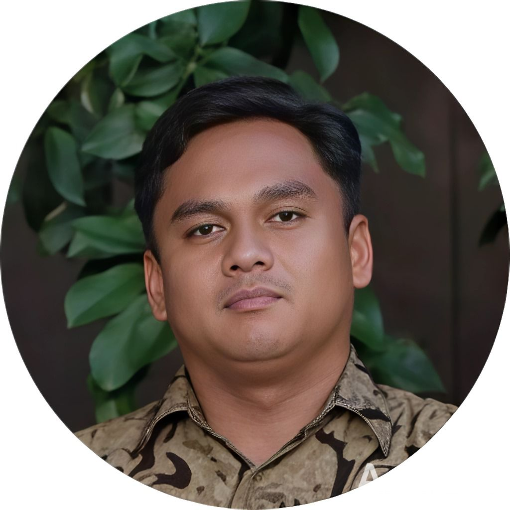

DevOps Engineer, IT Officer, and Full Stack Developer focused on creating premium hospitality systems, intelligent automation, scalable infrastructures, and elegant digital experiences inspired by modern technology ecosystems.

An experienced IT Support, DevOps Engineer, and Full Stack Developer focused on premium hospitality technology, automation systems, infrastructure reliability, and elegant digital experiences.
Experienced in DevOps practices, IT infrastructure, networking, automation systems, troubleshooting, and enterprise hospitality operations. Strong analytical mindset with attention to scalability, performance, and operational excellence.
Specialized in Full Stack Development, DevOps automation, CI/CD pipelines, infrastructure monitoring, networking systems, and modern hospitality technology solutions.
Combining technology and creativity to deliver modern digital systems with premium UI/UX experiences, workflow optimization, and operational efficiency.
Years of experience delivering enterprise hospitality systems, infrastructure reliability, and operational excellence.
Managing infrastructure systems, monitoring platforms, operational technology, WordPress development, network reliability, troubleshooting, and automation systems for hospitality operations.
Maintained IT assets, infrastructure reliability, operational systems, networking, technical support, and compliance documentation across departments.
Designed scalable software solutions, developed modern applications, optimized system performance, and collaborated with teams to build reliable digital platforms.
Premium digital products and operational systems designed to improve efficiency, automation, and guest experience.
Successfully developed a modern hotel Property Management System (PMS) featuring reservation management, room status monitoring, check-in & check-out process, housekeeping coordination, reporting dashboard, and integrated operational workflow automation.
Developed an intelligent hotel case management system for handling operational issues, tracking response time, monitoring case status, department coordination, escalation workflow, and real-time analytics dashboard.
Built a guest comment and feedback platform to collect guest experiences, monitor satisfaction levels, generate reports, and improve hospitality service quality through real-time insights.
Created a digital guest card management system integrated with hotel operations for faster guest registration, QR verification, centralized guest data management, and enhanced customer experience.
Academic background and educational journey focused on technology, software engineering, networking, and information systems.
2001 - 2007
2007 - 2010
2010 - 2013
2013 - 2016
2017 - 2018
Professional contact information, profile summary, and technical expertise.
📞 082112001450
✉️ divrayadnyaa@mail.com
🌐 https://divrayadnya.github.io/divrayadnya/
📍 Jalan Partha Wijaya NO: 13 Br.Melinggih Desa Melinggih Kec. Payangan Kab. Gianyar
An experienced IT Support professional with strong expertise in DevOps practices, ensuring seamless IT system operations and efficient technical assistance. Skilled in diagnosing and resolving diverse hardware and software issues with a communicative, user-friendly approach. Adept at implementing automation, monitoring, and CI/CD pipelines to enhance system reliability and performance.
1. Full Stack Development – Front-end and back-end application design, optimization, and scalability.
2. DevOps – Automation, monitoring, CI/CD pipelines, and operational excellence.
3. Networking – IP addressing, wireless networking, troubleshooting, and infrastructure reliability.